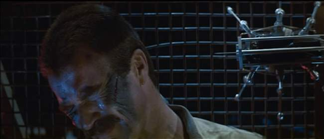
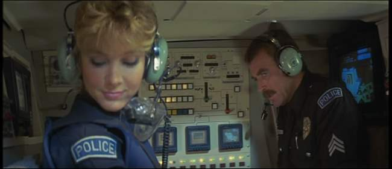
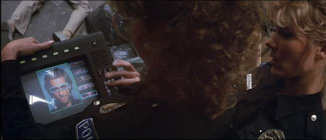
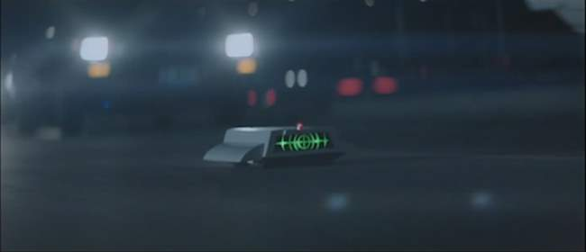
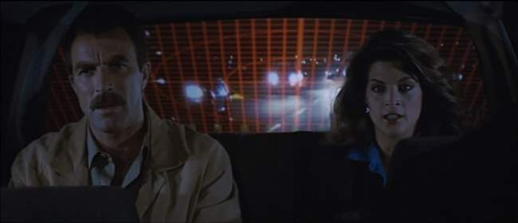
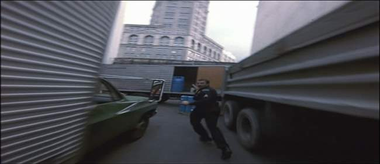
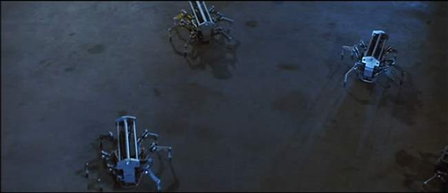
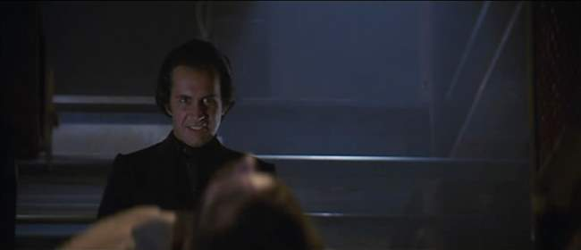
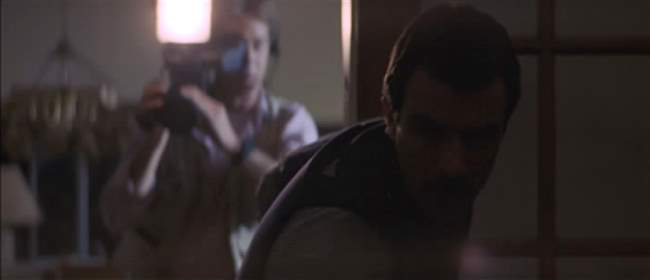
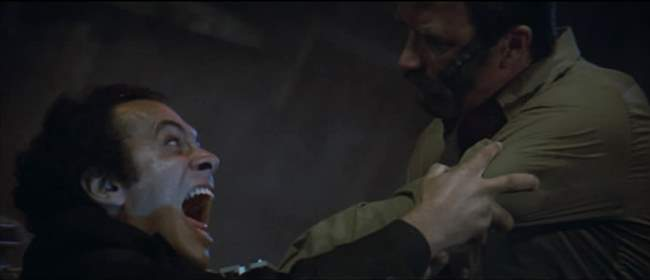

Movie review by : SFAM
Year : 1984
Directed by : Michael Crichton
Written by : Michael Crichton
Degree of Cyberpunk visuals : Medium
Correlation to Cyberpunk themes : Medium
Rating : 5/10
Key cast members :

Overview: Sometimes cheese can be enjoyable. Michael Crichton's movie, Runaway, is filled with too many straight-up Hollywood clichés to be taken seriously, but it's still fun. Maybe it's just because I'm a Die-Hard Magnum PI fan, or perhaps I love to see Gene Simmons' evil glare. Runaway has some fun ideas, but the movie's not great. It's one of those movies where the bad guy can magically get anywhere and automatically knows everything. It is more fun than it deserves to be though.

The Story: In near-future, society has taken full advantage of micro-electronics and robot technology. Many basic jobs, such as taking care of corn fields, are now carried out by robots. Robots even fulfill surrogate nanny roles for children stuck at home. In this world, Sgt. Jack Ramsay (Tom Selleck) is a specialist on disabling malfunction robots. Ramsay and his new partner, Karen Thompson (Cynthia Rhodes) get enmeshed in a series of incidents where robots have gone wild, sometimes with deadly results.

In investigating the faulty robots, they find that they have been modified with a special "assassin" computer chip that turns normal robots into man-killing death machines. The trail leads to Dr. Charles Luther (enjoyably played by Kiss rock star, Gene Simmons), and over-the-top evil genius who will stop at nothing to develop and sell these chips to the highest bidder. Ramsay and Thompson stop Dr. Luther by intercepting a chip delivery from his girlfriend, played by Kirstie Alley, and capture Luther's chip design template for making new copies.

As the plot thickens, Dr. Luther brings out his toys. The most impressive gadget which the movie is most known for are mini-spiders that can jump 6 feet in the air, and deliver shots of acid. Luther also has heat-seeking bullets that can be targeted to an individual body heat profile, and mini-homing bombs on wheels called "lock-ons." Things get tense when Luther kidnaps Ramsay's kid to exchange for the chip template.

The Acting: The acting is nothing special in Runaway, and certainly lacks originality in any of the assigned roles ? virtually every character is cookie cutter Hollywood fare. Tom Selleck basically plays his Magnum PI character, so if you like that guy, you'll probably like his performance here. Cynthia Rhodes plays a shallow but cute sidekick who wants nothing more than to get it on with Selleck. Kirstie Alley's role consists mostly of looking hawt. With that said, Gene Simmons is the really fun one to watch. All he really does well is "look evil" but he does this so well! This coupled with the fact that Simmons' character is almost magical ? he always knows where everyone is, and can infiltrate any location including a busy police station to log on to Ramsay's computer with virtually no disguise. Again, we're not talking high quality here, but it is fun.

The FX: Runaway provides us with a number of low-budget cyberpunk toys, but probably the best effect employed was the use of the fish-eye lens to give us the perspective of the missile bullet. This simple camera effect makes the heat-seeking bullet far more believable than it should. But it's the spiders which everyone recognizes. For some reason, these seemed far more believable to me when I watched this movie in the 80s. Now, they just sort of seem to sit there and wiggle. Still, when watching the ending sequence in Matrix Revolutions, where Neo walks through the tunnel with the high-quality CG spider-bots traveling everywhere, I was reminded of Runaway. So in that sense, Runaway's toys have outlasted the movie itself.

Evil Chips: I'm not really sure what this even means, but Runaway is predicated on the idea that "assassin" chips can be made. These chips provide an alternate instruction set which appears generic enough to work on virtually any robot. In looking at this, the idea reeks of Hollywood cheese. Wouldn't it be cool though if someone could design an instruction set that could self-organize its commands based on its environment? I suppose Java does this in some ways in that its platform independent, but robot independent seems a bit more complicated.

Dr. Luther is just another Dr. Evil: It's amazing how a character can change the world of film. Ever since Austin Powers' Dr. Evil character came onto the stage, it's virtually impossible to take incoherent evil guys seriously. The moral of this story is had Dr. Charles Luther just paid off his henchmen, he would have escaped scott free. But since he had to come up with craaazy deaths for them, our hero had to come to the rescue.

Full and Free Access by the Newsies: In Runaway's future, the news organizations have the right to wherever they want, whenever they want. So much so that they're allowed access during a police operation to save an infant from a crazed robot. This comes off as being fairly silly in the movie, as its hard to imagine them ever getting this type of access. This is more an indication of the perception folks had of news organizations in the 80s. How time changes things. Now the perception is that news organizations pretty hang out to wait for their stories to be hand-fed. They still excitedly arrive at standoffs and the like, but outside of a few brave souls who prowl the streets outside the green zone in Iraq, it's hard to imagine news organizations today even bothering to investigate the most obvious of events.

The Bottom Line: One has to wonder how a decent story teller like Crichton ends up taking some interesting ideas on technology and society and embedding them into a cookie-cutter Hollywood storyline. Things certainly happen in the production so who knows. Watching Runaway, you get the feeling that this should have been a better flick. But while the movie isn't great, the spiders are fun, as is Gene Simmons' glare. And if you're a Magnum PI fan, chances are you'll like it even better than one of the weekly episodes.